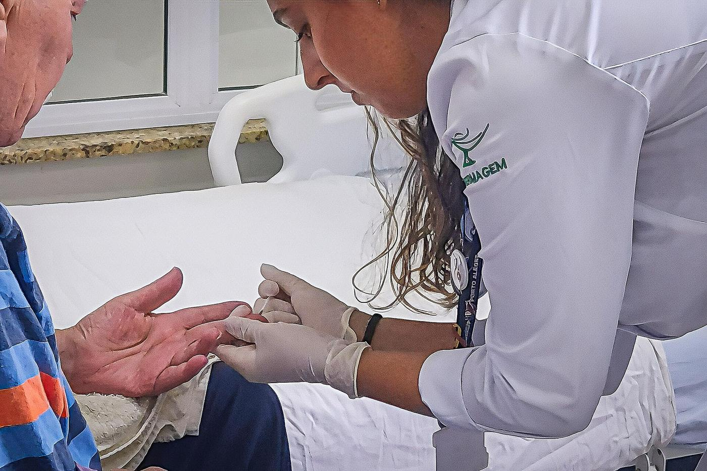
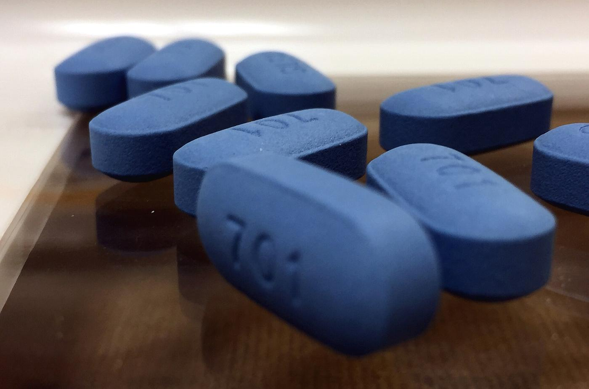
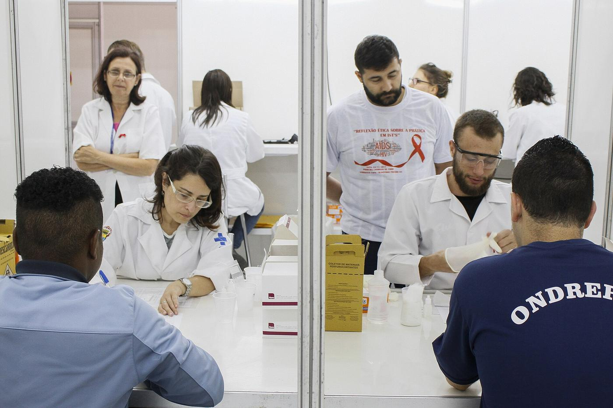

HIV hoje não é o HIV de antigamente.
Quem vive com HIV e faz o tratamento pode ter uma vida longa, trabalhar, namorar e ter filhos sem HIV. E, com o vírus controlado, não passa o HIV para ninguém numa relação sexual.
O que ainda machuca muito é o preconceito.
O Brasil avançou muito.
de pessoas vivem com HIV no Brasil. Pode ser seu vizinho, seu colega ou alguém da sua família.
número de mortes por aids de toda a história do país, graças ao tratamento gratuito.
a passagem do HIV da mãe para o bebê como problema de saúde pública no Brasil. Com pré-natal e tratamento, o bebê nasce sem o vírus.
pessoas já usam a PrEP, um remédio grátis do SUS que evita pegar HIV.
Mas o Maranhão é o 4º estado do Nordeste em novos casos.
E o número está subindo entre os jovens. Informação é a nossa melhor proteção.
Foto ilustrativa: Universidade de Brasília, CC BY 2.0
HIV e aids não são a mesma coisa.
Ele ataca as células de defesa do corpo, aquelas que lutam contra as doenças. A pessoa pode passar anos sem sentir nada. Por isso, só o teste mostra se a pessoa tem HIV.
Ela aparece quando o HIV fica muitos anos sem tratamento e as defesas do corpo enfraquecem. Quem descobre cedo e se trata não chega à aids.
Pense numa casa com seguranças.
O HIV é um ladrão. As defesas do corpo são os seguranças da casa.
Como o HIV passa. E como não passa.
Pode passar por
- Sexo sem camisinhavaginal, anal ou oral
- Compartilhar seringa ou agulha
- Da mãe para o bebêna gravidez, no parto ou na amamentação, quando não há tratamento
- Transfusão de sanguemuito raro no Brasil, porque todo sangue doado é testado
Não passa por
Pode morar junto, cuidar e conviver com quem vive com HIV sem nenhum medo.
Coisas que todo mundo já ouviu falar.
“O HIV pode passar pelo beijo.”
Saliva não transmite HIV. Pode beijar, abraçar e beber no mesmo copo sem medo.
“Mosquito pode transmitir HIV.”
O HIV não sobrevive no mosquito. Pernilongo não passa HIV.
“Quem tem HIV tem aids.”
HIV é o vírus. Aids é a fase avançada, que só aparece sem tratamento. Quem se trata não chega à aids.
“Quem se trata e está indetectável não transmite o HIV no sexo.”
Foi comprovado por grandes estudos: indetectável = intransmissível.
“Existe remédio para tomar logo depois de uma relação de risco.”
É a PEP. Precisa começar em até 72 horas e é grátis no SUS.
“O teste de HIV é pago e demora semanas.”
O teste rápido é grátis no posto e o resultado sai em cerca de 30 minutos.
“Uma mulher que vive com HIV pode ter um bebê sem HIV.”
Com pré-natal e tratamento, o bebê nasce sem o vírus. O Brasil praticamente eliminou essa transmissão.
“A empresa pode exigir teste de HIV para contratar.”
Isso é proibido. E discriminar uma pessoa por ter HIV é crime (Lei 12.984/2014).
“Só homens gays pegam HIV.”
Qualquer pessoa que tem relações sexuais pode ter HIV. Cerca de 3 em cada 10 novos casos são em mulheres.
“Já existe cura para o HIV.”
Ainda não existe cura. Mas o tratamento controla o vírus e garante uma vida longa e saudável.
Aconteceu algo agora? A camisinha estourou? Houve violência sexual?
Existe a PEP, um remédio de urgência que impede o HIV de se instalar. É preciso começar em até 72 horas, e quanto antes, melhor. O tratamento dura 28 dias.
Procure hoje uma UPA, um hospital ou o serviço de HIV do município. Dúvidas: Disque Saúde 136 (ligação grátis).
Hoje existem vários jeitos de se proteger. Todos são grátis no SUS.
Não existe um jeito só. Cada pessoa escolhe o que combina com a vida dela, e pode usar mais de um.
Camisinha
Masculina ou feminina. Protege do HIV, da sífilis e de outras infecções. É grátis nos postos de saúde.
Teste rápido
Usa uma gotinha de sangue do dedo, e o resultado sai em cerca de 30 minutos. Se teve risco há menos de 30 dias, repita o teste depois.
PrEP (antes)
Remédio tomado antes para não pegar HIV. É para quem tem mais chance de contato com o vírus, a partir dos 15 anos. Já foi anunciada uma versão injetável para o SUS.
PEP (depois)
Remédio de urgência tomado depois de um risco. Tem que começar em até 72 horas e dura 28 dias.
Pré-natal
Toda gestante faz o teste. Se der reagente, o tratamento protege o bebê.
Tratar é prevenir
Quem vive com HIV, se trata e fica com o vírus indetectável não transmite o HIV no sexo.


Qual proteção combina com você?
Veja qual situação parece com a sua. Serve para você saber o que pedir no posto.
- Teve uma relação de risco nos últimos 3 dias?PEP, hoje. Vá a uma UPA ou a um hospital. O remédio precisa começar em até 72 horas.
- Nunca fez o teste, ou não fez no último ano?Teste rápido no posto. É o primeiro passo e é grátis.
- Usa camisinha só às vezes, ou quase nunca?Pergunte no posto se a PrEP é indicada para você.
- Para todo mundoCamisinha, que também protege de sífilis e de outras infecções.
- Já usa camisinha sempre e fez o teste este ano?Você já se cuida bem. Continue fazendo o teste uma vez por ano.
Sugestão educativa. Quem decide junto com você é o profissional de saúde.
O teste deu reagente. E agora?
Primeiro, respire. Hoje o HIV é uma condição de saúde que se controla, como pressão alta ou diabetes. Veja o caminho:
Confirmar
A equipe de saúde faz outro exame para confirmar. O resultado é sigiloso: ninguém pode contar para a sua família ou para o seu patrão.
Ser acompanhado
Você é encaminhado ao serviço especializado (SAE), com médico, enfermagem e psicólogo. Tudo pelo SUS.
Começar o remédio
São poucos comprimidos por dia, grátis desde 1996. Quanto antes começar, melhor.
Ficar indetectável
Em alguns meses, o vírus fica tão baixo que o exame nem consegue achar. Isso se chama carga viral indetectável.
Seguir a vida
Trabalhar, estudar, namorar, ter filhos sem HIV. O segredo é não parar o remédio e ir às consultas.

Indetectável = Intransmissível.
Quem se trata e mantém o vírus indetectável não transmite o HIV por relação sexual. Isso foi comprovado por grandes estudos científicos.
O vírus tem remédio. O preconceito ainda não.
Muita gente deixa de fazer o teste por medo do que os outros vão pensar. E muita gente que tem HIV para o tratamento por vergonha. Por isso o preconceito também adoece.
Laço humano no Dia Mundial de Luta contra a Aids, Brasília. Foto: Agência Brasil, CC BY 3.0 BR
Não é doença “de um grupo”
Qualquer pessoa que tem relações sexuais pode ter HIV: homem, mulher, jovem, idoso, casado ou solteiro. Hoje, cerca de 3 em cada 10 novos casos são em mulheres.
Discriminar é crime
A Lei 12.984/2014 pune quem demite, recusa matrícula, nega emprego ou expõe alguém por ter HIV. A pena é de 1 a 4 anos de prisão.
Seu emprego é protegido
A empresa não pode exigir teste de HIV para contratar ou demitir (Portaria 1.246/2010 do Ministério do Trabalho).
Palavras que machucam × palavras que acolhem
| Em vez de… | Diga… |
|---|---|
| “aidético” | pessoa que vive com HIV |
| “contaminado”, “contaminou” | tem HIV, transmitiu |
| “grupo de risco” | situação de risco: qualquer pessoa pode passar por uma |
| “pegou porque quis” | sem julgamento: ninguém merece adoecer |
| “sentença de morte” | condição de saúde que tem tratamento |
Alguém te contou que vive com HIV? Veja como ajudar.
Faça
- Agradeça a confiança
- Escute mais do que fala
- Guarde o segredo: a história é dela
- Continue abraçando e dividindo a mesa
- Ofereça companhia na consulta
Evite
- Perguntar “como você pegou?”
- Separar copo, prato ou toalha (não precisa!)
- Contar para outras pessoas
- Tratar como alguém que vai morrer
- Dar sermão
Em São José de Ribamar, o cuidado é grátis e sigiloso.
Cais de São José de Ribamar. Foto: Ramsesmagno, CC BY-SA 4.0
Posto de saúde (UBS)
Vá à Unidade Básica de Saúde mais perto da sua casa e peça o teste rápido e camisinhas. É grátis e sigiloso.
Urgência: PEP
Teve risco nos últimos 3 dias? Vá a uma UPA ou a um hospital hoje e peça a PEP.
Serviço especializado (SAE/CTA)
Endereço, horário e telefone do serviço do município: em confirmação com a Secretaria Municipal de Saúde.